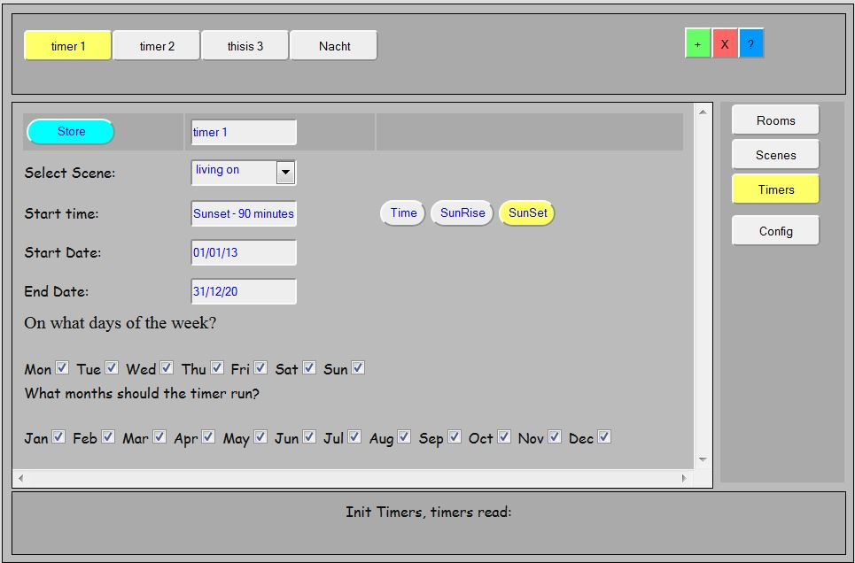

This part of the documentation describes the timers screen and what you can (and sometimes cannot) do with the timers screen.

As you see, the GUI interface is designed to operate (and manage) all tasks for the connected devices and minimize the need for manual changing of configuration files etc. let alone making configuration changes at compile time.
In case I missed something, please send me an email or make a note on this page. For the moment I'm the only author of LamPI so it can tak a few days before I answer....